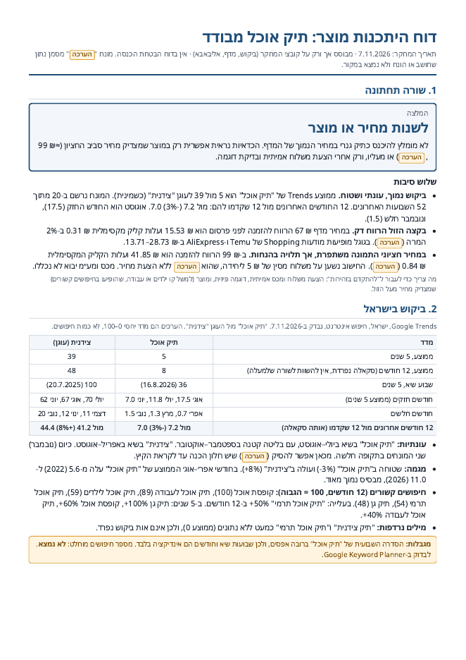
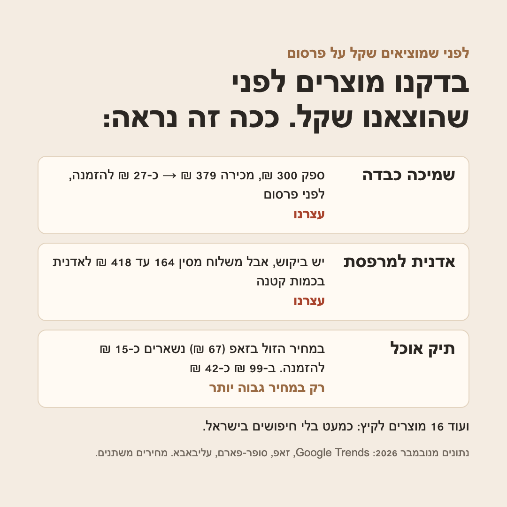

יש לך רעיון למוצר?
נבדוק אם הוא שווה את זה.
לא צריך להבין ב-AI או במחקר שוק. שולחים לנו שם של מוצר בוואטסאפ, ותוך 48 שעות מקבלים דוח ברור: יש ביקוש בישראל? כמה זה עולה בסין? כמה זה נמכר כאן? וכמה נשאר לך מכל מכירה.
שולחים רעיון בוואטסאפמה מקבלים
- ביקוש בישראל לפי Google Trends: עונתיות ומגמה
- מחירי מדף ומתחרים: זאפ, סופר-פארם, מודעות בגוגל
- 3 ספקים בסין: מחיר, כמות מינימום, לוגו, דוגמה
- חשבון רווח לכל הזמנה בשלושה מחירי מכירה
- שורה תחתונה: להתקדם, לשנות מחיר או לעצור, ומה לבדוק לפני שמזמינים
דוגמה אמיתית: תיק אוכל מבודד

התשובה הייתה "לשנות מחיר או מוצר": במחיר הזול בזאפ (67 ₪) נשארים כ-15 ₪ להזמנה, וב-99 ₪ כ-42 ₪. לדוח המלא (PDF)
עוד מוצרים שבדקנו

מחיר
149 ₪
מחיר השקה ל-5 הבדיקות הראשונות, עד יום שלישי 11.11.2026 ב-22:00 (אחר כך 249 ₪). משלמים ב-Bit או PayBox אחרי שאישרנו שהמוצר מתאים לבדיקה. הדוח לא הגיע תוך 48 שעות? הכסף חוזר באותו יום.
לא בודקים מוצרים שדורשים אישורי תקינה מיוחדים (חשמל, ילדים, מזון, קוסמטיקה, רפואה). הדוח מבוסס על מקורות ציבוריים ומסמן הערכות. זה לא ייעוץ משפטי, מיסוי או מכס, ולא הבטחה לרווח.
שולחים רעיון בוואטסאפארטיום · וואטסאפ 055-507-1722